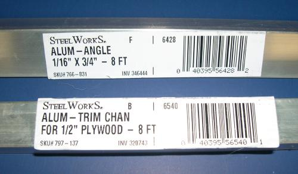
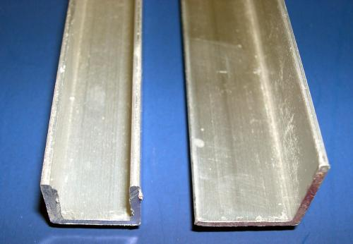

| Wood Slat Floor ( 2 of 7 ) | Menu Last Page Next Page |
|

 |
Aluminum Angle and Aluminum Channel -
1/2" aluminum trim channel and 3/4" or 1" aluminum angle are used to make the attachment brackets. The channel is used to strengthen the connection to the cross sections, and the aluminum angle supports the cedar slats. Both are available at most hardware stores.
|